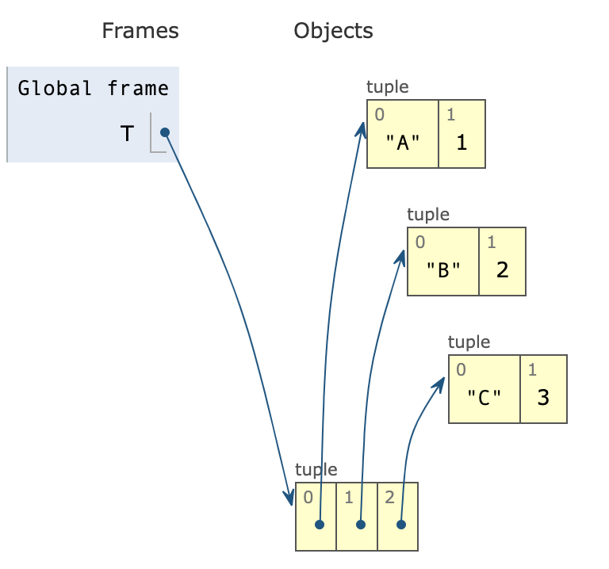
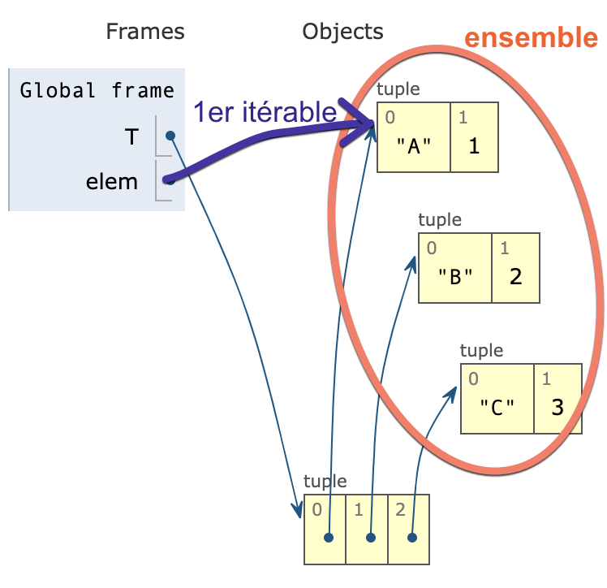

TP2 listes, indices, méthodes
Rappels de cours sur les listes
Editeur Python
- Utiliser un notebook. Saisir une ou plusieurs lignes de code Python, puis appuyer simultanement sur Majuscule(Shift) + Entrée pour executer le code.
TP6: Boucles bornées et parcours d’une liste
Ex preliminaire: Parcours d’une liste
On pourra consulter le cours complet à l’adresse python>boucles_bases et python>boucles_avancé
Une boucle bornée utilise le mot for. La structure suit le schéma suivant:
L’itérable est un ensemble de valeurs prises successivement par le variant. A chaque itération, le variant passe à la valeur suivante.
Cet itérable peut être une liste, ou une sequence de nombre entiers (range(n), range(len(L)), …)
On souhaite afficher les valeurs de l’iterable avec la fonction print. On donne les 2 scripts suivants:
- script 1
- script 2
-
Question: Lequel des 2 scripts précédents affiche
1 10 100 1000? Lequel des 2 affiche0 1 2 3? Préciser dans chaque cas:- quel est le variant
- quel est l’itérable
- quelles sont les valeurs successives prises par le variant
Ex 1: table de 3
On peut créer une liste VIDE, en faisant L = [], puis lui ajouter des valeurs. C’est ce qui doit être réalisé par ce programme.
Recopier et compléter le programme. Celui-ci doit compléter la liste avec les valeurs de la table de 3.
-
Question a1: Que vaut la liste
Laprès ce programme? Quelles sont les valeurs prises par l’iterablei? -
Question a2: Comment avez vous complété les
...? Comment feriez-vous pour compléter les valeurs de la table de 7?
Ecrire l’instruction en compréhension de liste qui construit la liste L. (voir cours sur les types sequentiels > listes > comprehension de liste)
Ex 2: Energie en sciences physiques
On donne les listes de relevés du temps et de la vitesse pour un mobile.
La vitesse vitesse[0]est relevée au temps t[0], vitesse[1]est relevée au temps t[1], etc…
Dans une cellule Python,
- Recopiez les 2 listes et leur contenu
- commencez par attribuer 100 à la variable
m. - créez une liste vide pour l’énergie:
E = [] - calculer les éléments de la liste
E, l’energie cinetique pour un systeme de masse 100kg et de vitesse v, selon la loi:
E = 1/2 * m * v**2
Pour réaliser cela, vous completerez la boucle bornée sur les valeurs de
vitesse:
Ecrire l’instruction en compréhension de liste qui construit la liste E. (voir cours sur les types sequentiels > listes > comprehension de liste)
- Question b: Recopier le script sur votre feuille.
Ex 3: algorithmes simples utilisant une boucle bornée
Le script suivant calcule la somme des 99 premiers entiers:
$$0 + 1 + 2 + 3 + ...99$$Tester le script suivant et lire le résultat.
-
Question d: adapter ce script pour que celui-ci calcule la somme des termes $2^i$ pour
$$2^0 + 2^1 + 2^2 + ... + 2^{99}$$ivariant de 0 à 99: -
Question e: adapter ce script pour calculer le nombre de boules de la pyramique à 7 étages suivante. Quel est ce nombre? Quel serait ce nombre pour une pyramide à 99 étage?
ID 32142797 © [Ekostsov](https://fr.dreamstime.com/ekostsov_info) | Dreamstime.com
Ex 4: Autres types construits
Tuple
Soit le tuple T suivant:
L’interpreteur python construit l’objet T de la manière suivante:

image - pythontutor
Lorsque l’on utilise la boucle bornée:
…cela créé un itérable (un ensemble), comme sur l’image suivante:

en orange: ensemble des itérables
Ainsi, avec le programme suivant:
On affiche:
A vous de jouer: Ecrire un programme qui parcourt les éléments de
T, et affiche le caractère lu à la première position:
On utilisera la même boucle for que dans l’exemple précédent.
Dictionnaire
On souhaite construire un dictionnaire python D à partir du tuple T.
Les caractères seront les clés du dictionnaire, et les entiers, les valeurs correspondantes.
On souhaite que D soit constitué de: {"A":1,"B":2,"C":3}
Adapter le script précédent pour construire
Dà partir des éléments deT.
On peut aussi construire un dictionnaire par compréhension, en une seule ligne.
Exemple:
Construire le dictionnaire
Dpar compréhension de dictionnaire.
Portfolio
- Utiliser l’un des exemples utilisant une compréhension de liste pour repérer ce qu’est le variant de boucle, à quels endroits il faut le placer pour construire la liste.
Liens
- activité sur les copies par valeur et par reference: pythontutor
- TP5 listes, indices, méthodes
- TP6 boucles et parcours de liste